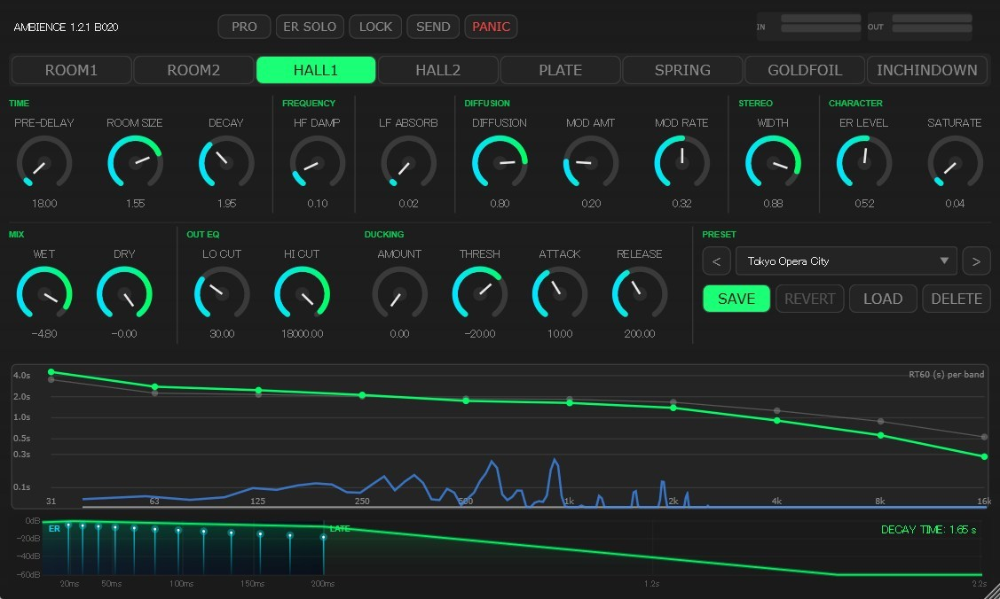
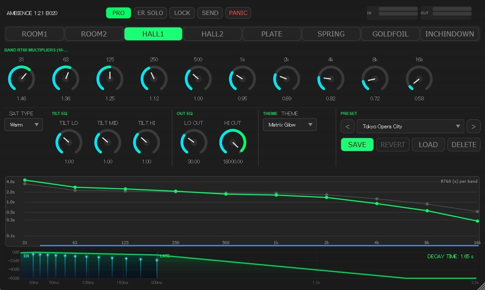

<!DOCTYPE html>
<html lang="ja">
<head>
<meta charset="UTF-8" />
<meta name="viewport" content="width=device-width, initial-scale=1" />
<title>Ambience — Algorithmic Reverb | OTODESK_Official_Site</title>
<link rel="preconnect" href="https://fonts.googleapis.com" />
<link rel="preconnect" href="https://fonts.gstatic.com" crossorigin />
<link href="https://fonts.googleapis.com/css2?family=Geist:wght@300;400;500;600&family=Geist+Mono:wght@400;500&family=Instrument+Serif:ital@0;1&display=swap" rel="stylesheet" />
<link rel="stylesheet" href="styles/main.css" />
<link rel="stylesheet" href="styles/ambience.css" />
</head>
<body class="amb-page">
<div id="root"></div>

<script src="https://unpkg.com/react@18.3.1/umd/react.development.js" integrity="sha384-hD6/rw4ppMLGNu3tX5cjIb+uRZ7UkRJ6BPkLpg4hAu/6onKUg4lLsHAs9EBPT82L" crossorigin="anonymous"></script>
<script src="https://unpkg.com/react-dom@18.3.1/umd/react-dom.development.js" integrity="sha384-u6aeetuaXnQ38mYT8rp6sbXaQe3NL9t+IBXmnYxwkUI2Hw4bsp2Wvmx4yRQF1uAm" crossorigin="anonymous"></script>
<script src="https://unpkg.com/@babel/standalone@7.29.0/babel.min.js" integrity="sha384-m08KidiNqLdpJqLq95G/LEi8Qvjl/xUYll3QILypMoQ65QorJ9Lvtp2RXYGBFj1y" crossorigin="anonymous"></script>

<script src="data/plugins.js"></script>
<script type="text/babel" src="components/visual.jsx"></script>
<script type="text/babel" src="components/counters.jsx"></script>
<script type="text/babel" src="components/sections.jsx"></script>

<script type="text/babel" data-presets="env,react">
const LANG_KEY = "otodesk_lang";

function useLang() {
  const [lang, setLang] = React.useState(() => localStorage.getItem(LANG_KEY) || "jp");
  const set = (v) => { setLang(v); localStorage.setItem(LANG_KEY, v); };
  return [lang, set];
}

function AmbHero({ lang }) {
  const [parallax, setParallax] = React.useState(0);
  React.useEffect(() => {
    const onScroll = () => setParallax(Math.min(1, window.scrollY / 700));
    window.addEventListener("scroll", onScroll, { passive: true });
    return () => window.removeEventListener("scroll", onScroll);
  }, []);

  return (
    <section className="amb-hero">
      <div className="amb-hero-bg" style={{ transform: `translateY(${parallax * 60}px)` }}>
        <div className="amb-grid-bg" />
        <div className="amb-glow" />
      </div>

      <div className="amb-hero-content">
        <div className="amb-hero-flag">
          <a href="index.html" className="amb-back">← {lang === "jp" ? "OTODESK" : "OTODESK"}</a>
          <span className="amb-flag-tag">
            <span className="amb-pulse" /> {lang === "jp" ? "リリース中" : "OUT NOW"}
          </span>
        </div>

        <h1 className="amb-hero-title">
          {lang === "jp" ? (
            <>
              <span className="ahl ahl-1">空間を、</span>
              <span className="ahl ahl-2"><em>支配する</em>。</span>
            </>
          ) : (
            <>
              <span className="ahl ahl-1">Command</span>
              <span className="ahl ahl-2"><em>the room</em>.</span>
            </>
          )}
        </h1>

        <p className="amb-hero-sub">
          {lang === "jp" ? (
            <>Abbey Road、Vienna Musikverein、Concertgebouw、Carnegie Hall。<br />
            世界の名空間が、<span className="amb-em">16 チャンネル FDN</span> の中に閉じ込められた。</>
          ) : (
            <>Abbey Road, Vienna Musikverein, Concertgebouw, Carnegie Hall.<br />
            All the world's great rooms, captured in a <span className="amb-em">16-channel FDN</span>.</>
          )}
        </p>

        <div className="amb-hero-meta">
          <div><span className="ahm-k">PLUGIN</span> Ambience v1.1.0</div>
          <div><span className="ahm-k">TYPE</span> Algorithmic Reverb</div>
          <div><span className="ahm-k">FORMAT</span> VST3 · Windows</div>
          <div><span className="ahm-k">LICENSE</span> GPLv3 · {lang === "jp" ? "完全無料" : "Free"}</div>
        </div>

        <div className="amb-hero-actions">
          <a
            href="https://github.com/OTODESK4193/Ambience1.0.1/releases/latest"
            target="_blank"
            rel="noreferrer"
            className="btn-release"
            onClick={() => {
              try {
                counterUp("dl-ambience");
                window.dispatchEvent(new CustomEvent("dlbump", { detail: "ambience" }));
              } catch(e){}
            }}
          >
            <span className="br-dot" />
            {lang === "jp" ? "ダウンロード v1.1.0" : "Download v1.1.0"}
            <span className="arrow">↓</span>
          </a>
          <a
            href="https://github.com/OTODESK4193/Ambience1.0.1"
            target="_blank"
            rel="noreferrer"
            className="btn-ghost amb-src"
          >
            {lang === "jp" ? "ソースコード" : "Source"} <span className="arrow">↗</span>
          </a>
          <DownloadChip pluginId="ambience" lang={lang} />
          <button className="lang-toggle amb-lang" onClick={() => {
            const newLang = lang === "jp" ? "en" : "jp";
            localStorage.setItem(LANG_KEY, newLang);
            location.reload();
          }}>
            <span className={lang === "en" ? "on" : ""}>EN</span>
            <span className="sep">/</span>
            <span className={lang === "jp" ? "on" : ""}>JP</span>
          </button>
        </div>
      </div>

      <div className="amb-hero-shot">
        
      </div>
    </section>
  );
}

function Pitch({ lang }) {
  return (
    <section className="amb-section amb-pitch">
      <div className="amb-eyebrow">— 01 / {lang === "jp" ? "そもそも、なぜ無料なのか" : "Why free?"}</div>
      <h2 className="amb-h2">
        {lang === "jp" ? (
          <>有料リバーブの<span className="amb-h">9 割</span>は、<br />実は同じものを<span className="amb-h">隠して</span>売っている。</>
        ) : (
          <>Most paid reverbs sell you<br />the same <span className="amb-h">box</span>, in different boxes.</>
        )}
      </h2>
      <div className="amb-pitch-body">
        <p>
          {lang === "jp" ?
            "Schroeder、Moorer、Jot ── 1960年代から数えて約60年、商用リバーブの土台はほとんど更新されていません。違いはプリセットとUIだけ。" :
            "Schroeder, Moorer, Jot — for sixty years, the foundations of commercial reverb have barely moved. The differences are presets and UI."
          }
        </p>
        <p>
          {lang === "jp" ?
            "Ambience は、その土台そのものを学術文献から再構築したリサーチグレード実装です。FWHT 帰還行列、最近接素数遅延配置、Välimäki-Liski の 10 バンド GEQ、ISM ベース Early Reflections ── どれも「論文を読んで実装する」種類の DSP。" :
            "Ambience reimplements that foundation from primary academic sources — FWHT feedback matrices, nearest-prime delay allocation, Välimäki-Liski 10-band GEQ, ISM-based early reflections. Research-paper DSP, end to end."
          }
        </p>
        <p className="amb-stress">
          {lang === "jp" ?
            "それを、無料で配ります。" :
            "And we're giving it away."
          }
        </p>
      </div>

      <div className="amb-pitch-video">
        <div className="amb-eyebrow" style={{ marginTop: 0, marginBottom: 16 }}>
          ▶ {lang === "jp" ? "動作デモ" : "Demo video"}
        </div>
        <div className="amb-video-frame">
          <iframe
            src="https://www.youtube.com/embed/9UfD9NzSE3c?rel=0&modestbranding=1"
            title="Ambience — Before / After demo"
            frameBorder="0"
            allow="accelerometer; autoplay; clipboard-write; encrypted-media; gyroscope; picture-in-picture; web-share"
            allowFullScreen
          />
        </div>
      </div>
    </section>
  );
}

function Numbers({ lang }) {
  const items = [
    { n: "16", k: lang === "jp" ? "FDN チャンネル" : "FDN channels", s: "Feedback Delay Network" },
    { n: "21", k: lang === "jp" ? "ファクトリプリセット" : "factory presets", s: "Abbey Road · Musikverein · Carnegie" },
    { n: "7", k: lang === "jp" ? "リバーブアルゴリズム" : "reverb algorithms", s: "ROOM · HALL · PLATE · SPRING · GOLDFOIL" },
    { n: "10", k: lang === "jp" ? "バンド GEQ 吸収" : "band GEQ absorption", s: "Välimäki-Liski WLS" },
    { n: "4", k: lang === "jp" ? "ADAA サチュレーション" : "ADAA saturation modes", s: "Warm · Tape · Tube · Hard" },
    { n: "0", k: lang === "jp" ? "オーディオスレッド確保" : "audio-thread allocations", s: lang === "jp" ? "完全リアルタイムセーフ" : "fully real-time safe" }
  ];
  return (
    <section className="amb-section amb-numbers">
      <div className="amb-eyebrow">— 02 / {lang === "jp" ? "数字で見る Ambience" : "By the numbers"}</div>
      <div className="amb-num-grid">
        {items.map((it, i) => (
          <div key={i} className="amb-num-cell">
            <div className="amb-num-n">{it.n}</div>
            <div className="amb-num-k">{it.k}</div>
            <div className="amb-num-s">{it.s}</div>
          </div>
        ))}
      </div>
    </section>
  );
}

function Engine({ lang }) {
  return (
    <section className="amb-section amb-engine">
      <div className="amb-eyebrow">— 03 / {lang === "jp" ? "中身を見せましょう" : "Inside the box"}</div>
      <h2 className="amb-h2">
        {lang === "jp" ? (
          <>「箱の中で<span className="amb-h">なに</span>が<br />起きているのか」を、公開する。</>
        ) : (
          <>Here's exactly what's<br /><span className="amb-h">happening inside the box</span>.</>
        )}
      </h2>

      <div className="amb-engine-grid">
        <article className="amb-card">
          <div className="amb-card-k">FDN CORE</div>
          <h3>{lang === "jp" ? "16ch Feedback Delay Network" : "16-channel Feedback Delay Network"}</h3>
          <p>
            {lang === "jp" ?
              "Fast Walsh-Hadamard Transform を帰還行列に採用し、密度の高い無色拡散を実現。16 本の遅延ラインは互いに素な素数長で対数配置され、どんなルームサイズでもコムフィルタ歪を発生させません。" :
              "A Fast Walsh-Hadamard Transform forms the feedback matrix, delivering dense, colorless diffusion. The 16 delay lines are tuned to mutually coprime primes on a logarithmic scale, eliminating comb-filter artifacts at any room size."
            }
          </p>
        </article>

        <article className="amb-card">
          <div className="amb-card-k">7 ALGORITHMS</div>
          <h3>{lang === "jp" ? "ROOM・HALL・PLATE・SPRING・GOLDFOIL" : "ROOM · HALL · PLATE · SPRING · GOLDFOIL"}</h3>
          <p>
            {lang === "jp" ?
              "ROOM1／ROOM2／HALL1／HALL2／PLATE／SPRING／GOLDFOIL ── それぞれが独立したトポロジカル・ルーティング、Allpass 係数、ER パターンを持ち、完全に別の音色キャラクタを供給します。" :
              "ROOM1 / ROOM2 / HALL1 / HALL2 / PLATE / SPRING / GOLDFOIL — each algorithm uses a distinct topological routing, Allpass gain structure, and early-reflection pattern. Seven completely different reverb characters."
            }
          </p>
        </article>

        <article className="amb-card">
          <div className="amb-card-k">VÄLIMÄKI-LISKI</div>
          <h3>{lang === "jp" ? "Stage 2 GEQ 吸収 ── 周波数別 RT60" : "Stage 2 GEQ — frequency-dependent RT60"}</h3>
          <p>
            {lang === "jp" ?
              "各 FDN チャンネルに、10 バンドの biquad Graphic EQ をカスケード接続。Weighted Least Squares 法で重み付き最小二乗系を解き、可聴域全体で目標 RT60 曲線を高精度に追従させます。" :
              "Each FDN channel hosts a 10-band biquad GEQ cascade. The plugin solves a Weighted Least Squares system in real time to follow target RT60 curves with surgical accuracy across the full audible band."
            }
          </p>
        </article>

        <article className="amb-card">
          <div className="amb-card-k">ISM ER</div>
          <h3>{lang === "jp" ? "Image Source Method による Early Reflections" : "ISM-based Early Reflections"}</h3>
          <p>
            {lang === "jp" ?
              "音響学の標準手法 Image Source Method をベースに、アルゴリズムごとに最適化された ER パターンを生成。プリエコーの空間感を、ステレオイメージ制御込みで知覚的に正確に。" :
              "Early reflections are generated via the Image Source Method, tuned per algorithm for perceptually accurate pre-echo with full stereo imaging control."
            }
          </p>
        </article>

        <article className="amb-card">
          <div className="amb-card-k">BANDLIMITED LFO</div>
          <h3>{lang === "jp" ? "16 本の独立 LFO 変調" : "16 independent LFOs"}</h3>
          <p>
            {lang === "jp" ?
              "16 本の FDN チャンネルそれぞれに、独立した帯域制限ノイズ LFO を配置。黄金比 Weyl 列で初期化し、互いに非同期で非周期的なモジュレーションを保証します。" :
              "Each of the 16 FDN channels is modulated by an independent bandlimited-noise LFO, initialized via a Golden-Ratio Weyl sequence to guarantee mutually asynchronous, non-periodic motion."
            }
          </p>
        </article>

        <article className="amb-card">
          <div className="amb-card-k">ADAA SATURATOR</div>
          <h3>{lang === "jp" ? "4 種のサチュレーションキャラクタ" : "Four saturation characters"}</h3>
          <p>
            {lang === "jp" ?
              "Anti-Derivative Anti-Aliasing 適用の 4 モード ── Warm（Vicanek）、Tape（Padé）、Tube（非対称 ADAA）、Hard（ADAA クリップ）。エイリアシングなしで質感を選べます。" :
              "Anti-Derivative Anti-Aliasing in four flavors — Warm (Vicanek), Tape (Padé rational), Tube (asymmetric ADAA), Hard (ADAA clip). Texture without aliasing artifacts."
            }
          </p>
        </article>
      </div>
    </section>
  );
}

function ProMode({ lang }) {
  return (
    <section className="amb-section amb-pro">
      <div className="amb-pro-grid">
        <div className="amb-pro-text">
          <div className="amb-eyebrow">— 04 / {lang === "jp" ? "Pro モード" : "Pro Mode"}</div>
          <h2 className="amb-h2">
            {lang === "jp" ? (<>10 バンド RT60、<br /><span className="amb-h">指先で曲げる</span>。</>) : (<>Bend the RT60 curve<br /><span className="amb-h">with your fingertips</span>.</>)}
          </h2>
          <p>
            {lang === "jp" ?
              "PRO ボタンひとつで、31 Hz から 16 kHz までの 10 バンド RT60 倍率、Low ／ Mid ／ High の Tilt EQ、4 種サチュレーションタイプ選択が解放されます。" :
              "One PRO button unlocks per-band RT60 multipliers from 31 Hz to 16 kHz, Low / Mid / High Tilt EQ, and saturation type selection."
            }
          </p>
          <p>
            {lang === "jp" ?
              "リアルタイム RT60 グラフは、HF Damping や LF Absorption の効果も含めた「実効カーブ」をオレンジ、プリセット参照値をグレーで重ねて表示。グラフを見ながら音を作れます。" :
              "The live RT60 graph overlays the effective curve (orange — including HF Damping & LF Absorption) on top of the preset reference (gray). Mix by looking, not just by listening."
            }
          </p>
        </div>
        <div className="amb-pro-shot">
          
        </div>
      </div>
    </section>
  );
}

function Presets({ lang }) {
  const presets = [
    { algo: "ROOM1", name: "Abbey Road Studio 2", ref: "Abbey Road Studio 2, London" },
    { algo: "ROOM1", name: "Drums in a Box", ref: "Small dead studio room" },
    { algo: "ROOM1", name: "Tracking Room", ref: "Medium tracking room" },
    { algo: "ROOM2", name: "Abbey Road Studio 1", ref: "Abbey Road Studio 1" },
    { algo: "ROOM2", name: "Capitol Studio A", ref: "Capitol Studios, LA" },
    { algo: "ROOM2", name: "Skywalker Sound", ref: "Skywalker Sound, CA" },
    { algo: "HALL1", name: "Carnegie Hall", ref: "Carnegie Hall, NYC" },
    { algo: "HALL1", name: "Tokyo Opera City", ref: "Tokyo Opera City Concert Hall" },
    { algo: "HALL1", name: "Berlin Konzerthaus", ref: "Konzerthaus Berlin" },
    { algo: "HALL2", name: "Vienna Musikverein", ref: "Wiener Musikverein Goldener Saal" },
    { algo: "HALL2", name: "Boston Symphony", ref: "Boston Symphony Hall" },
    { algo: "HALL2", name: "Concertgebouw", ref: "Amsterdam Concertgebouw" },
    { algo: "PLATE", name: "EMT140 Vocal", ref: "EMT 140 — vocal setting" },
    { algo: "PLATE", name: "EMT140 Snare", ref: "EMT 140 — snare setting" },
    { algo: "PLATE", name: "Dark Plate", ref: "Dark plate, enhanced low end" },
    { algo: "SPRING", name: "Surf Guitar", ref: "Guitar amp spring tank" },
    { algo: "SPRING", name: "Vintage Studio", ref: "Fender-style spring tank" },
    { algo: "SPRING", name: "Deep Tank", ref: "AKG BX-20 style deep spring" },
    { algo: "GOLDFOIL", name: "Gothic Cathedral", ref: "Cologne Cathedral reference" },
    { algo: "GOLDFOIL", name: "Stone Chamber", ref: "Stone underground chamber" },
    { algo: "GOLDFOIL", name: "Infinite Space", ref: "Synthetic infinite ambient" }
  ];
  return (
    <section className="amb-section amb-presets">
      <div className="amb-eyebrow">— 05 / {lang === "jp" ? "プリセット" : "Presets"}</div>
      <h2 className="amb-h2">
        {lang === "jp" ? (<>21 の<span className="amb-h">伝説の空間</span>。</>) : (<>21 <span className="amb-h">legendary spaces</span>.</>)}
      </h2>
      <p className="amb-lead">
        {lang === "jp" ?
          "実在する世界の名ホール／スタジオ／プレート／スプリングをモデル化。すべて含まれており、追加購入はありません。" :
          "Every world-class hall, studio, plate and spring you'd wish for — modeled and included. No DLC. No upgrades."
        }
      </p>
      <div className="amb-preset-grid">
        {presets.map((p, i) => (
          <div key={i} className="amb-preset-cell">
            <div className="apc-algo">{p.algo}</div>
            <div className="apc-name">{p.name}</div>
            <div className="apc-ref">{p.ref}</div>
          </div>
        ))}
      </div>
    </section>
  );
}

function Safety({ lang }) {
  const items = [
    { k: "01", t: lang === "jp" ? "ヒープ確保ゼロ" : "Zero heap allocation",
      b: lang === "jp" ? "オーディオスレッド上では new ／ malloc ／ vector::resize() を一切呼びません。全バッファは prepareToPlay() で確保。" : "No new / malloc / vector::resize on the audio thread. All buffers pre-allocated in prepareToPlay()." },
    { k: "02", t: lang === "jp" ? "Dirty-Flag パラメータディスパッチ" : "Dirty-flag parameter dispatch",
      b: lang === "jp" ? "DSP パラメータ変更時のみ重い WLS 行列計算 (16ch × 10 バンド LDLT) を走らせます。" : "The expensive Stage 2 GEQ WLS computation (16ch × 10-band LDLT) runs only when DSP parameters actually change." },
    { k: "03", t: lang === "jp" ? "Ableton ジッタ保護" : "Ableton jitter protection",
      b: lang === "jp" ? "サンプルレートの非同期変更を検出し、安全な内部リセットでクラッシュを防ぎます。" : "Detects asynchronous sample-rate changes (an Ableton edge case) and triggers a safe internal reset." },
    { k: "04", t: lang === "jp" ? "Denormal 抑制" : "ScopedNoDenormals",
      b: lang === "jp" ? "全 processBlock() 入口で denormal CPU スパイクを抑制。" : "Suppresses denormal CPU spikes at the entry of every processBlock()." },
    { k: "05", t: lang === "jp" ? "Smoothed ゲイン" : "Sample-accurate gain smoothing",
      b: lang === "jp" ? "Wet ／ Dry のゲインはサンプル精度で補間。オートメーションでもジッパーノイズなし。" : "Wet and Dry gain changes are interpolated sample-accurately — no zipper noise under automation." },
    { k: "06", t: lang === "jp" ? "安全なエディタ破棄" : "Safe editor destruction",
      b: lang === "jp" ? "Editor 破棄時に stopTimer() と setLookAndFeel(nullptr) を明示的に呼び、Ableton クリーンアップ順序クラッシュを防止。" : "Explicit stopTimer() and setLookAndFeel(nullptr) in the Editor destructor — prevents Ableton cleanup-order crashes." }
  ];
  return (
    <section className="amb-section amb-safety">
      <div className="amb-eyebrow">— 06 / {lang === "jp" ? "実戦投入のための設計" : "Built for the studio"}</div>
      <h2 className="amb-h2">
        {lang === "jp" ? (<>セッションを<br /><span className="amb-h">壊さない</span>ために。</>) : (<>Engineered to <span className="amb-h">never break your session</span>.</>)}
      </h2>
      <p className="amb-lead">
        {lang === "jp" ?
          "リサーチグレードの DSP は、リアルタイム制約を守れなければ意味がありません。Ableton Live 特有のエッジケースを含めて、徹底的に堅牢化しています。" :
          "Research-grade DSP is worthless if it breaks under real-time constraints. Hardened against Ableton Live's edge cases, line by line."
        }
      </p>
      <div className="amb-safety-grid">
        {items.map((it, i) => (
          <div key={i} className="amb-safety-cell">
            <div className="ass-k">{it.k}</div>
            <h4>{it.t}</h4>
            <p>{it.b}</p>
          </div>
        ))}
      </div>
    </section>
  );
}

function Metrics({ lang }) {
  const ms = [
    { k: "D50", desc: lang === "jp" ? "明瞭度 ── 初期 50ms と全体エネルギの比" : "Definition — early/total energy at 50ms", ideal: ">0.5" },
    { k: "C50", desc: lang === "jp" ? "音声明瞭度" : "Speech clarity", ideal: ">0 dB" },
    { k: "C80", desc: lang === "jp" ? "音楽明瞭度" : "Music clarity", ideal: "-2 ~ +4 dB" },
    { k: "EDT", desc: lang === "jp" ? "初期減衰時間 ── 最初の 10dB から推定した RT60" : "Early Decay Time — RT60 from the first 10dB", ideal: "≈ RT60 mid" }
  ];
  return (
    <section className="amb-section amb-metrics">
      <div className="amb-eyebrow">— 07 / {lang === "jp" ? "可視化と計測" : "Visualization & metrics"}</div>
      <h2 className="amb-h2">
        {lang === "jp" ? (<><span className="amb-h">数値</span>で語る、リバーブ。</>) : (<>Reverb that <span className="amb-h">speaks in numbers</span>.</>)}
      </h2>
      <p className="amb-lead">
        {lang === "jp" ?
          "リアルタイムで D50 / C50 / C80 / EDT を計測表示。スタジオ計測に使われる音響評価値が、ミックス画面に直接出てきます。" :
          "Live D50 / C50 / C80 / EDT readouts — the same acoustic metrics used in real-room measurement, right inside your mix."
        }
      </p>
      <table className="amb-metrics-table">
        <thead>
          <tr><th>Metric</th><th>Description</th><th>Ideal</th></tr>
        </thead>
        <tbody>
          {ms.map((m, i) => (
            <tr key={i}><td className="amk">{m.k}</td><td>{m.desc}</td><td className="ami">{m.ideal}</td></tr>
          ))}
        </tbody>
      </table>
    </section>
  );
}

function Specs({ lang }) {
  return (
    <section className="amb-section amb-specs">
      <div className="amb-eyebrow">— 08 / {lang === "jp" ? "仕様" : "Specifications"}</div>
      <div className="amb-specs-grid">
        <div>
          <div className="asg-k">OS</div>
          <div className="asg-v">Windows 10 / 11 (64-bit)</div>
        </div>
        <div>
          <div className="asg-k">{lang === "jp" ? "フォーマット" : "Format"}</div>
          <div className="asg-v">VST3 / Standalone</div>
        </div>
        <div>
          <div className="asg-k">CPU</div>
          <div className="asg-v">AVX2 required</div>
        </div>
        <div>
          <div className="asg-k">{lang === "jp" ? "動作確認" : "Tested host"}</div>
          <div className="asg-v">Ableton Live 11 / 12</div>
        </div>
        <div>
          <div className="asg-k">{lang === "jp" ? "ライセンス" : "License"}</div>
          <div className="asg-v">GPLv3 · {lang === "jp" ? "完全無料" : "Free"}</div>
        </div>
        <div>
          <div className="asg-k">Framework</div>
          <div className="asg-v">JUCE 8.0.x</div>
        </div>
      </div>
      <p className="amb-warn">
        ⚠ {lang === "jp" ?
          "macOS／AU は非対応。他 DAW での動作は未検証です。Ableton Live 上での使用を強く推奨します。" :
          "macOS / AU not supported. Operation on other DAWs is unverified. Ableton Live strongly recommended."
        }
      </p>
    </section>
  );
}

function CTA({ lang }) {
  return (
    <section className="amb-section amb-cta">
      <h2 className="amb-cta-title">
        {lang === "jp" ? (
          <><span className="amb-h">有料</span>のものと、<br /><span className="amb-h">違い</span>が分かりますか？</>
        ) : (
          <><span className="amb-h">Can you tell</span><br />it apart from the <span className="amb-h">paid ones</span>?</>
        )}
      </h2>
      <p className="amb-cta-sub">
        {lang === "jp" ?
          "GitHub から無料でダウンロードできます。" :
          "Free download on GitHub."
        }
      </p>
      <div className="amb-cta-actions">
        <a
          href="https://github.com/OTODESK4193/Ambience1.0.1/releases/latest"
          target="_blank"
          rel="noreferrer"
          className="btn-release big"
          onClick={() => {
            try {
              counterUp("dl-ambience");
              window.dispatchEvent(new CustomEvent("dlbump", { detail: "ambience" }));
            } catch(e){}
          }}
        >
          <span className="br-dot" />
          {lang === "jp" ? "ダウンロード v1.1.0" : "Download v1.1.0"}
          <span className="arrow">↓</span>
        </a>
        <DownloadChip pluginId="ambience" lang={lang} />
        <a href="index.html" className="btn-ghost">
          ← {lang === "jp" ? "他のプラグインを見る" : "Other plugins"}
        </a>
      </div>
    </section>
  );
}

function Changelog({ lang }) {
  const bugs = [
    { jp: "PreDelay 修正：ER パスと FDN パスの両方に正しく信号が供給されるよう修正。", en: "PreDelay fix: signal now correctly feeds both ER and FDN paths." },
    { jp: "金属的なコムフィルターアーティファクト解消：DC ブロッカー・マイクロサチュレーション・変調深度スケーリング・動的ネスト型オールパス変調の 4 重対策。", en: "Metallic comb artefact resolved via DC blocker, micro-saturation blend, modulation-depth scaling, and dynamic nested allpass modulation." },
    { jp: "プリセット PROモード修正：読み込み時に常に通常モードにリセットされるよう修正。", en: "Preset PRO-mode fix: always resets to normal mode on preset load." }
  ];
  const improvements = [
    { jp: "コーラス LFO：FDN チャンネルごとに黄金比分布の正弦波 LFO を追加。より豊かで有機的なテールテクスチャ。", en: "Chorus-style pitch modulation: per-channel sine LFO (golden-ratio phase/rate) for richer, organic tails." },
    { jp: "3 段直列オールパスチェーン：FDN チャンネルごとに 1 段から 3 段に拡張。後部エコー密度を大幅向上。", en: "3-stage serial nested allpass per FDN channel (was 1-stage). Rear echo density greatly improved." },
    { jp: "ER → 後期残響遷移平滑化：初期反射音を 15% ブレンドで FDN 入力に送り、自然な遷移をシミュレート。", en: "ER→late-reverb transition: early reflections fed at 15% into FDN input for natural crossover." },
    { jp: "周波数依存変調：短遅延 / HF チャンネルは 1.5×、長遅延 / LF チャンネルは 0.5× の変調深度スケーリング。", en: "Frequency-dependent modulation: 1.5× depth for short/HF channels, 0.5× for long/LF channels." },
    { jp: "FDN ループのソフトニー RMS 圧縮：チャンネルごとの RMS エンベロープフォロワーにより透明性の高いレベル制御。", en: "Soft-knee RMS compressor in FDN loop (threshold 0.35) for transparent level control." },
    { jp: "Thiran オールパス分数遅延補間：線形補間を置換。|H(ω)|=1 を保持し HF 明瞭度を維持。", en: "Thiran allpass fractional delay: replaces linear interpolation, flat |H(ω)|=1 response, maintains HF clarity." },
    { jp: "CPU 最適化：全体的な処理負荷を軽減。", en: "CPU optimisations: overall processing overhead reduced." }
  ];
  return (
    <section className="amb-section amb-changelog">
      <div className="amb-eyebrow">— 09 / {lang === "jp" ? "v1.1.0 アップデート内容" : "v1.1.0 Changelog"}</div>
      <h2 className="amb-h2" style={{ marginBottom: "12px" }}>
        {lang === "jp" ? <><span style={{ color: "#ff8a3c" }}>v1.1.0</span> アップデート</> : <>v1.1.0 <span style={{ color: "#ff8a3c" }}>Update</span></>}
      </h2>
      <p style={{ color: "var(--dim)", fontFamily: "var(--mono)", fontSize: "13px", marginBottom: "40px" }}>2026.06.13</p>
      <div style={{ display: "grid", gridTemplateColumns: "1fr 1fr", gap: "48px" }}>
        <div>
          <h3 style={{ fontSize: "13px", letterSpacing: "0.1em", color: "#ff6b6b", fontFamily: "var(--mono)", marginBottom: "20px", textTransform: "uppercase" }}>🐛 {lang === "jp" ? "バグ修正" : "Bug Fixes"}</h3>
          <ul style={{ listStyle: "none", padding: 0, margin: 0, display: "flex", flexDirection: "column", gap: "14px" }}>
            {bugs.map((b, i) => (
              <li key={i} style={{ fontSize: "14px", lineHeight: "1.7", color: "var(--ink)", paddingLeft: "16px", borderLeft: "2px solid #ff6b6b44" }}>{b[lang]}</li>
            ))}
          </ul>
        </div>
        <div>
          <h3 style={{ fontSize: "13px", letterSpacing: "0.1em", color: "#00e5a0", fontFamily: "var(--mono)", marginBottom: "20px", textTransform: "uppercase" }}>✨ {lang === "jp" ? "音質・機能向上" : "Improvements"}</h3>
          <ul style={{ listStyle: "none", padding: 0, margin: 0, display: "flex", flexDirection: "column", gap: "14px" }}>
            {improvements.map((m, i) => (
              <li key={i} style={{ fontSize: "14px", lineHeight: "1.7", color: "var(--ink)", paddingLeft: "16px", borderLeft: "2px solid #00e5a044" }}>{m[lang]}</li>
            ))}
          </ul>
        </div>
      </div>
    </section>
  );
}

function App() {
  const [lang] = useLang();
  return (
    <div className="amb-root">
      <AmbHero lang={lang} />
      <Pitch lang={lang} />
      <Numbers lang={lang} />
      <Engine lang={lang} />
      <ProMode lang={lang} />
      <Presets lang={lang} />
      <Safety lang={lang} />
      <Metrics lang={lang} />
      <Specs lang={lang} />
      <Changelog lang={lang} />
      <CTA lang={lang} />
      <Footer lang={lang} />
    </div>
  );
}

ReactDOM.createRoot(document.getElementById("root")).render(<App />);
</script>
</body>
</html>
